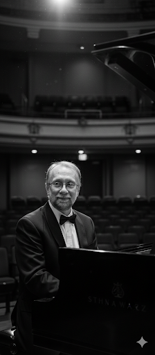

Composer & Pianist
Production Music · Jazz Piano · Theatre Organ

About
Born in London in 1960, Andy Quin is one of the world's most prolific and versatile production music composers — and a celebrated jazz pianist and theatre organist.
Not from a musical family, Andy began playing piano at the age of four. By his early teens a passion for jazz, composition and recording had taken hold — and he turned down a scholarship to the Royal College of Music to pursue a broader path, graduating from Keele University with a degree in Music and Electronics, with a final-year dissertation on the music of Earth, Wind & Fire.
An early pioneer of computer sampling, he worked with the Fairlight Computer Musical Instrument in the late 1970s and early 80s — at the cutting edge of what was then a completely new way of making music. In 1984 James de Wolfe commissioned his debut album Mirage, re-released the following year as DWCD 0001: the first ever CD issued by the world's first music library. More than 80 albums have followed.
His music has been heard in productions including Boardwalk Empire, Better Call Saul, Victoria & Abdul, Widows, The Assassination of Gianni Versace and Absolutely Fabulous: The Movie. In 2023 he received a PMA (Production Music Award) in recognition of his contribution to the industry.
Away from the studio, Andy is a celebrated jazz pianist and theatre organist, regularly accompanying silent films on some of Europe's finest Wurlitzer organs — those who have seen him play describe a technique to rival Art Tatum and Oscar Peterson.
Get in touchSelected credits
Andy's debut album for De Wolfe Music, commissioned in 1984 and re-released the following year as DWCD 0001 — the first ever CD issued by the world's first music library.
Library music featured in some of the most acclaimed American drama and genre series of the past two decades, broadcast to audiences of tens of millions worldwide.
A long association with British television, with music heard in many of the UK's most-watched programmes across several decades.
Composer behind some of Britain's most iconic television advertising campaigns of the 1980s, including the celebrated After Eight ad featuring Einstein, Monroe and Liberace.
Music featured in major British and Hollywood film productions across drama, thriller and comedy — and in the Terrence Malick film trailer for To the Wonder.
A celebrated theatre organist, Andy performs live accompaniments to classic silent films on some of Europe's finest Wurlitzer organs.
"A true virtuoso in the mould of Art Tatum and Oscar Peterson, with a stride technique to match."
— Music industry commentary"One of the most versatile, prolific and successful production music composers in the world — with thousands of broadcasts every year across all continents."
— De Wolfe Music
"A pioneer of computer sampling who helped define the sound of British television in the 1980s."
— Production Music Awards, 2023
Live
For theatre organ and silent film bookings, get in touch.
Get in touch
For commissions, performance enquiries, theatre organ bookings, or press requests, please use the form or visit his website directly.
andyquinmusic.comLibrary music enquiries via De Wolfe Music at dewolfemusic.com.